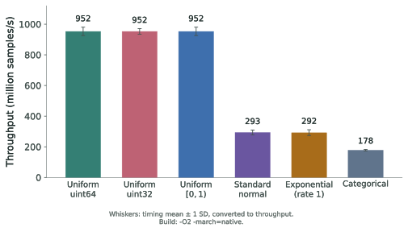
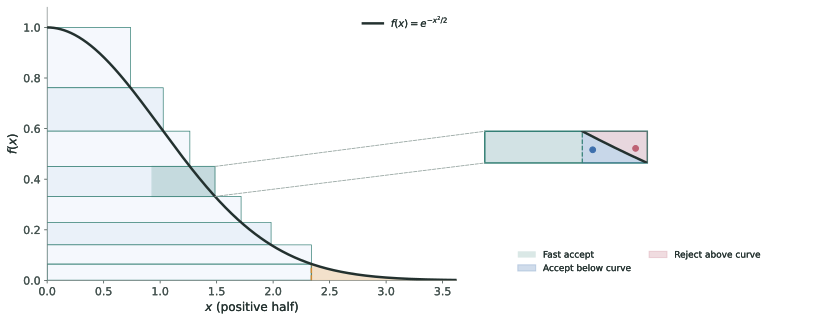

CRandom
Simple RNG tools for CProjects
Simple RNG tools for C projects. I generally use the same base for every project, and I like understanding as much as possible how things work. CRandom is where I keep that code.
I use components from different codebases. For now, the main generator is PCG64, with normal and exponential sampling adapted from NumPy’s ziggurat implementation.
Implemented distributions and throughput numbers

Exact timings
| Distribution | ns / sample (mean ± SD) | Million samples / s |
|---|---|---|
| Uniform 64-bit integer | 1.05 ± 0.03 | ≈952 |
| Uniform 32-bit integer | 1.05 ± 0.02 | ≈952 |
| Uniform [0, 1) | 1.05 ± 0.03 | ≈952 |
| Standard normal | 3.41 ± 0.18 | ≈293 |
| Exponential (rate = 1) | 3.43 ± 0.22 | ≈292 |
| Categorical | 5.62 ± 0.14 | ≈178 |
Measured with -O2 and
-march=native. These timings depend on the machine and compiler.
Sampling uniforms
Generating a uniform between 0 and 1 sounds relatively straightforward. I mean, you just have to do the following:
F64 U = (F64)RandomU64(&Rng) / UINT64_MAX;Right, right? Well, we should be careful here. A double has 53 bits of significand precision, so converting a 64-bit integer involves rounding. This expression can even produce 1. The version I use is:
F64 U = (F64)(RandomU64(&Rng) >> 11) * 0x1p-53;Shifting by 11 keeps 53 random bits. The hexadecimal literal
0x1p-53 is exactly 2−53. The remaining integer and
the scaled result are both exactly representable in a double, so we get
one of these values with equal probability:
That gives us [0, 1): zero is possible, one is not. It is a reasonable proxy for a continuous uniform. The spacing is about 1.11 × 10−16, and floating-point numbers are discrete anyway. How good can our uniform distribution be?
The interesting part is what happens when we transform it. Suppose we
sample an exponential using -log(1 - U). Since the largest
possible value of U is 1 − 2−53, we have:
Here, log is the natural logarithm. The true exponential distribution has no upper bound, but this construction does. That can matter when sampling rare events. CRandom uses ziggurat for exponential sampling; this is a simple example of why the uniform’s finite grid is worth thinking about.
Ziggurat

What I want to try next
I would like to SIMD RandomNormal and see how friendly
ziggurat is to it. I have a hunch, but I want to compare its throughput
with something straightforward to vectorize, like Box–Muller.
I also plan to venture into GPU programming at some point. Keeping it simple for now.